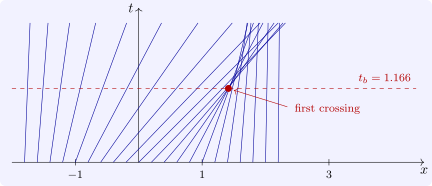

2.1 Quasilinear equations and breaking
Definition 2.1.1. A scalar conservation law is \(u_t + f(u)_x = 0\), with flux \(f\), or for smooth solutions \(u_t + a(u)u_x = 0\) with \(a = f'\). The basic example is the inviscid Burgers equation, \(f(u) = \frac 12u^2\), \(a(u) = u\).
By the method of Section 1, along a curve with \(dx/dt = a(u)\) the solution satisfies \(du/dt = u_t + a(u)u_x = 0\), so \(u\) is constant on the curve, and therefore so is its speed \(a(u)\): the characteristics are straight lines, \(x = x_0 + a(u_0(x_0))t\), each carrying its initial value.
Theorem 2.1.2. Let \(u_0\) be \(C^1\) and bounded with bounded derivative, and \(a\) be \(C^1\). The initial value problem \(u_t + a(u)u_x = 0\), \(u(x, 0) = u_0(x)\), has a \(C^1\) solution, given implicitly by \[ u = u_0\bigl (x - a(u)t\bigr ), \] for \(0 \leq t < t_b\), where \[ t_b = -\frac {1}{\inf _x\,\frac {d}{dx}a(u_0(x))} \] (\(t_b = \infty \) if \(a(u_0)\) is non-decreasing). If \(t_b < \infty \), the derivative \(u_x\) becomes unbounded as \(t \to t_b\), and no \(C^1\) solution exists beyond \(t_b\).
Proof. Write \(\sigma (x_0) = a(u_0(x_0))\), the speed of the characteristic from \(x_0\). The map \(x_0 \mapsto X(x_0, t) = x_0 + \sigma (x_0)t\) has derivative \(1 + \sigma '(x_0)t\), which is positive for all \(x_0\) exactly when \(t < t_b\); it is then strictly increasing and, since \(\sigma \) is bounded, onto \(\mathbb R\). So each \((x, t)\) lies on exactly one characteristic, with foot \(x_0(x, t)\), and \(u(x, t) = u_0(x_0(x, t))\) is \(C^1\) by the inverse function theorem. Differentiating, \[ u_x = \frac {u_0'(x_0)}{1 + \sigma '(x_0)t} , \] and along the characteristic where \(\sigma '\) attains (or approaches) its infimum, the denominator tends to \(0\) as \(t \to t_b\) while the numerator does not (since \(\sigma ' = a'(u_0)u_0'\)), so \(u_x \to \infty \). At \(t_b\) two characteristics carrying different values meet, and \(u\) would have to take both values at one point. □
For Burgers’ equation, \(\sigma = u_0\) and \(t_b = -1/\min u_0'\): the wave breaks first where it is steepest on its front. For \(u_0 = e^{-x^2}\), \(\min u_0' = -\sqrt 2e^{-1/2}\) at \(x = 1/\sqrt 2\), and \(t_b = e^{1/2}/\sqrt 2 = 1.166\) (Figure 2). The top of the hump travels faster than its foot and overtakes it, exactly as an ocean wave steepens and breaks on a beach.

Questions on this section
Stuck on something here? Ask below and it stays attached to this topic.